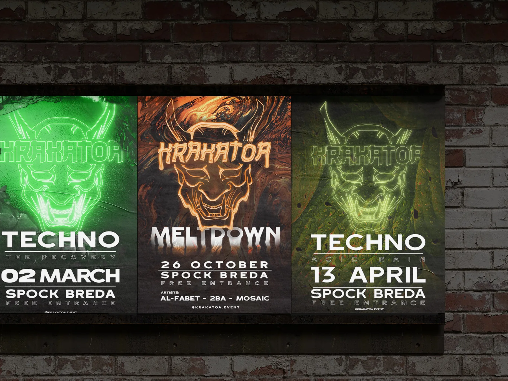

Krakatoa
techno evenement
Vaardigheden
- Graphic Design (Adobe Suite)
- Event Management
- Social Media Marketing
- Content Creation

Krakatoa was een terugkerende technonacht die ik organiseerde bij Spock in Breda. Het evenement was opgebouwd rond een krachtige, dynamische visuele identiteit: een vulkaan of kwaadaardige entiteit die bij elke editie een nieuwe vorm aannam. Elk evenement voelde als een nieuwe 'uitbarstingsfase', waarbij het kleurenpalet en de seizoensgebonden thema's veranderden om de stemming en kracht van de entiteit weer te geven.
Ik was verantwoordelijk voor de volledige creatieve uiting van het evenement:
- Posterontwerp
- Key visuals die het Krakatoa-merk vormgaven en het huidige seizoen of de uitbarstingsfase communiceerden.
- Socialmediagrafics
- Consistente content voor promoties, line-upaankondigingen, stories en herinneringen aan het evenement.
- Promotiestrategie
- Visuele storytelling via digitale kanalen om verwachtingen op te bouwen en een herkenbare uitstraling voor de reeks te creëren.
- Podiumontwerp
- Het visuele concept op locatie vertalen naar verlichting, kleurenschema's en sfeerelementen die aansloten bij het steeds veranderende vulkaanthema.